Too simple and too complex.
FYERS was building its 2.0 release with one goal: an app that works as well on a tablet and a browser as it does on a phone. At the centre of it sits the Portfolio, where traders check what they hold, what’s still open, and how much they’ve made or lost.
Too simple
- No filtering
- No customisation
- No extra features
Too complex
- Nothing grouped
- Nothing prioritised
- Some users still struggled
The issue wasn’t a lack of data. It was a lack of structure.
And the new version had to carry far more:
- Multiple asset types
- Many actions per item
- Smart orders
- Three devices
My role was to form the foundation: how the screens were organised, how they behaved, and how they felt. Requirements from Product Owners kept growing as we learned more about traders.
Six apps, six trade-offs, no complete answer.
I studied how six Indian trading apps present their dashboards: Zerodha, Upstox, Dhan, Groww, Angel One and 5paisa. Each made a different trade-off:
Some stayed minimal and hid detail until it was needed. Others went dense, with advanced filters and expandable rows.
Some kept Positions and Holdings apart. Others merged them.
None of them solved the whole problem for FYERS. So I stopped asking “what should we copy?” and started asking:
How do we show a lot without making the user work to find what matters to them?
Three behaviours shaped the answer
- They switch constantlybetween Holdings (“what do I own?”) and Positions (“what’s open?”).
- P&L comes firstbut the next move depends on context: the underlying, the product or the status.
- Privacy is realMany check their portfolio in shared or public spaces. It’s a need, not an edge case.
Would one screen be too crowded?
With a long list of options to offer, my first instinct was to put everything in one place. Then I asked: would it be too crowded? It would. Every detail, action and category on one screen would make the list harder to scan, and punish anyone who only wanted to check a single position.
We talked it through as a team and landed on a two-section layout: the full list on the left, kept intact, and the details for whatever you select on the right.
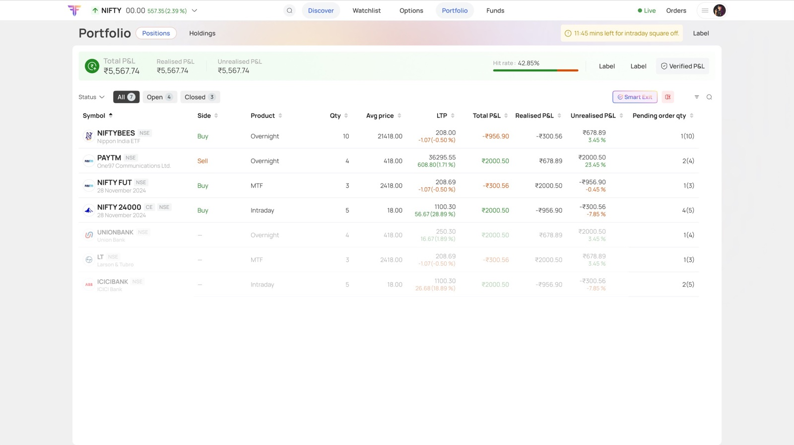
Why not a pop-up? Pop-ups cover the list and break the user’s place. The side panel trades some width for continuity, which is why the list itself had to be so carefully organised.
Where do the actions live? Four versions to find out.
Every version started from feedback. Stakeholders pushed on how the list was organised, and the biggest open question was the actions: a trader needs to buy, sell, see details, convert or exit, without the controls getting in the way of the numbers.
- V1An options menu on hoverIt opened over the list and blocked the rows underneath. Stakeholder feedback pushed us to rethink how it was organised.
- V2Actions to the side, on hoverHover a row and Buy, Sell, Details, Convert and Exit appear at its edge. Everything in one go, and no row gets covered.
- V3Actions on the row itselfEngineers flagged that some of the hover behaviour might not work on their side, so the actions moved onto the row.
- V4Back to hoverOnce that was worked through together, hover came back: the cleanest list, with every action one move away.
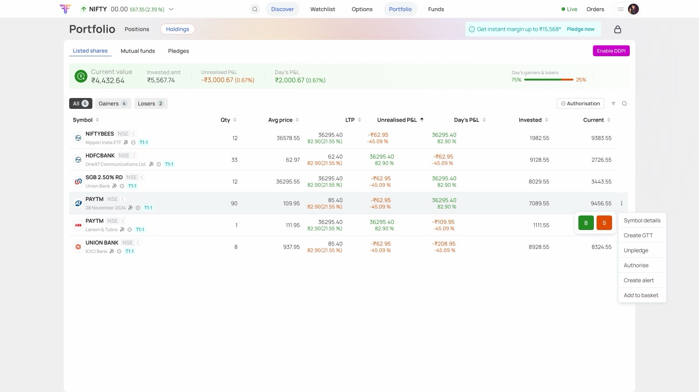
The layout we tried and dropped
Four decisions that organise everything.
1. Grouping that matches how traders think
Instead of one flat list, positions can be grouped by Status, Underlying, P&L, Product and Symbol type, with sort, filters and manageable columns on top. This was the answer to “no filtering, no customisation”. Try the tabs: these are the real screens.
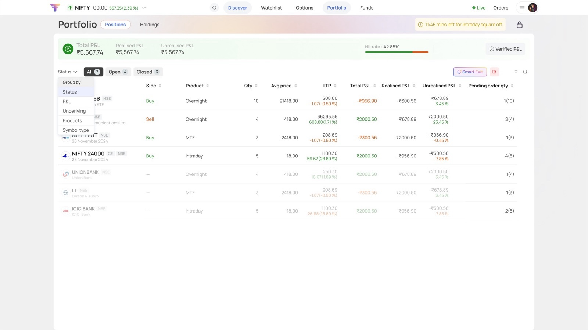
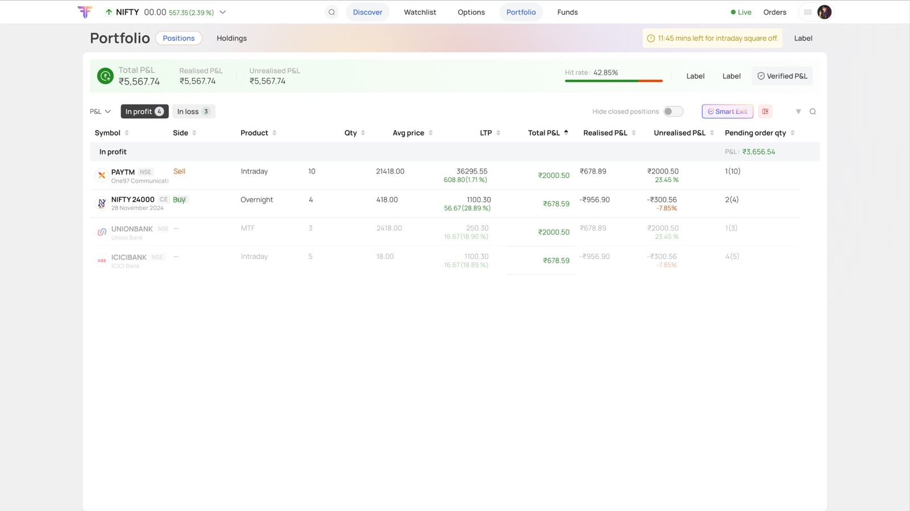
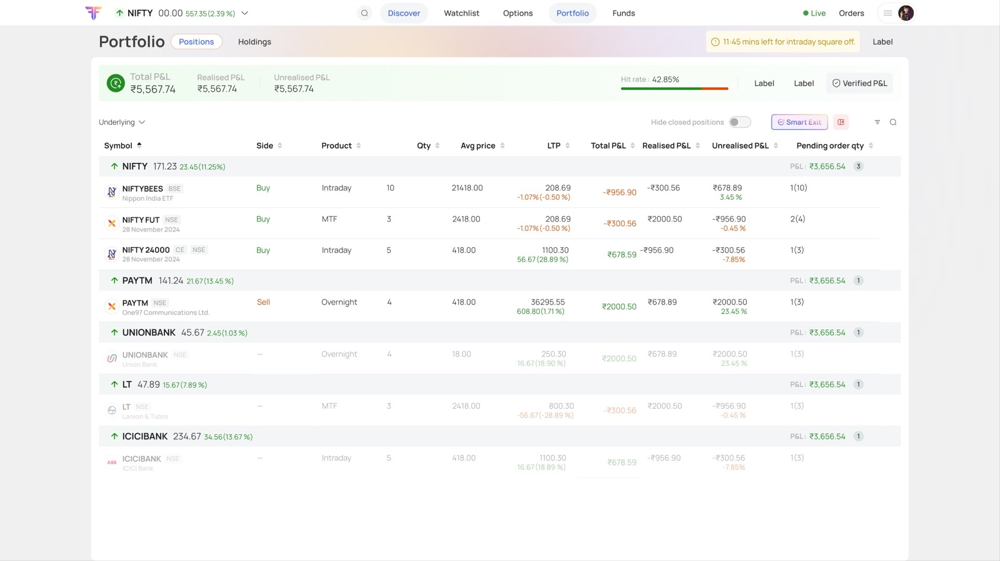
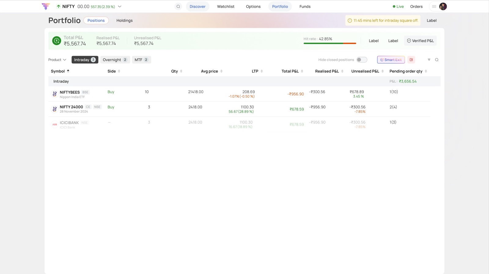
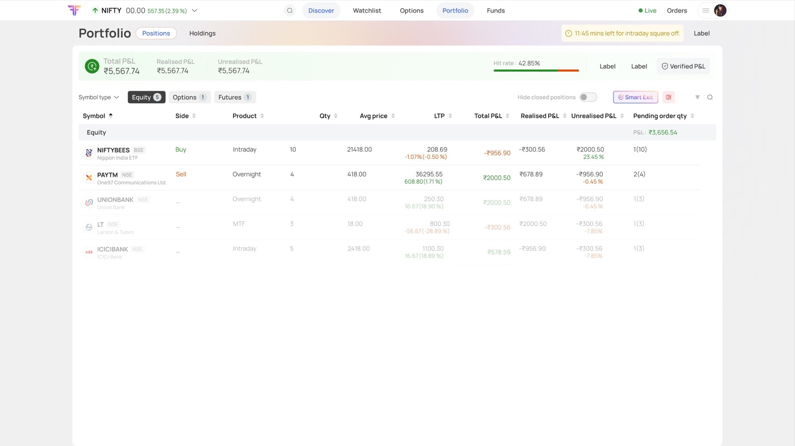
Status: the Group by menu sits right where the list starts.P&L: what’s working, and what isn’t.Underlying: every contract on NIFTY, together, with a subtotal.Product: intraday apart from overnight and MTF.Symbol type: equity, futures and options.
2. One pattern, reused everywhere
The same right-hand panel carries filters, column management, position details, holding details and mutual fund details. Learn it once, and you know it everywhere.
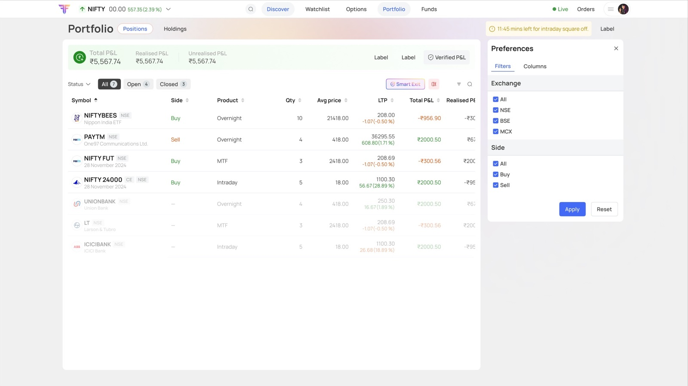
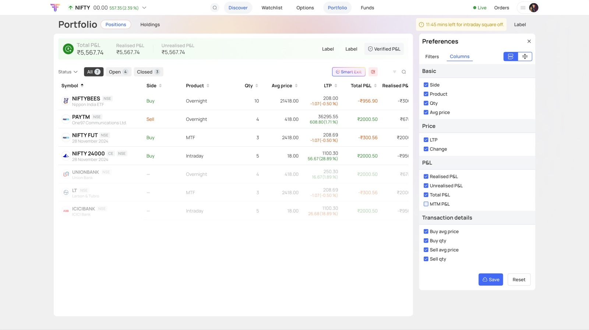
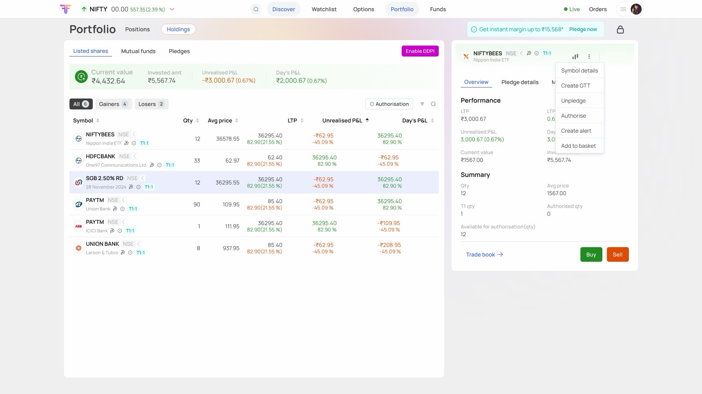
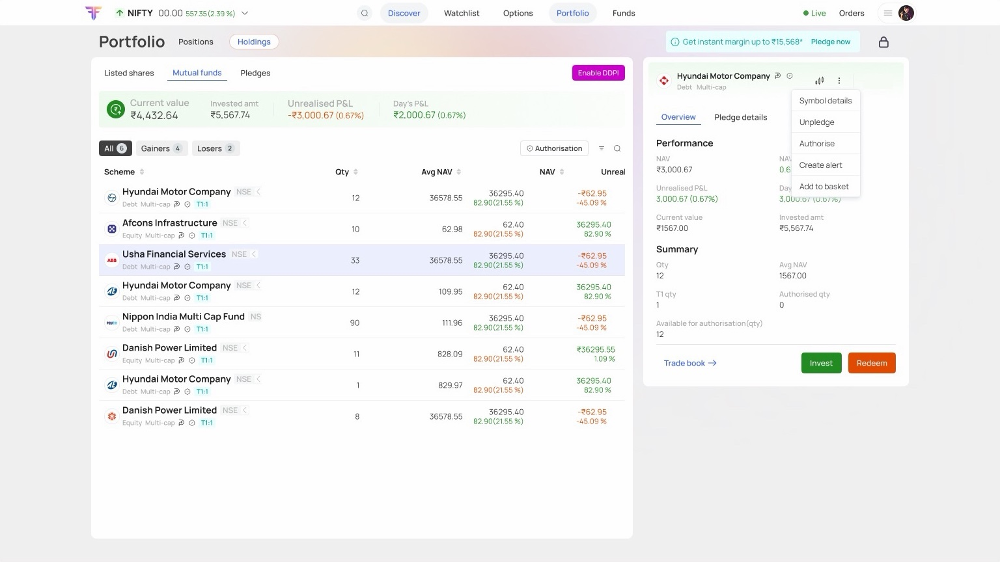
Filters in the side panel.Manage columns, same panel.Position details, same panel.Holding details, same panel.MF details, same panel. Learn it once, use it everywhere.
3. Colour that signals risk before you read
Warnings and confirmations follow one colour logic across every flow. Straight from the screens:
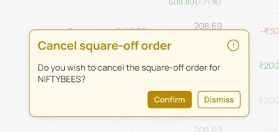
Yellow · cautionReverse, cancel square-off, conversion notes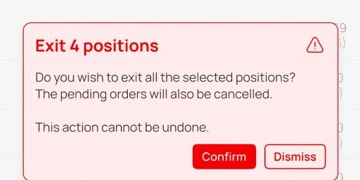
Red · can’t be undoneExit confirmations and high-stakes actions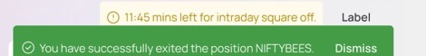
Green · doneSuccess, confirmed, all clear
4. A privacy lock
Because people check their portfolio around others, a lock hides the important numbers on screen. Try it:
Total P&L
₹5,567.74
Realised P&L
₹5,567.74
Unrealised P&L
₹5,567.74
Many workflows, one structure.
Positions isn’t one screen. It’s a family of workflows, and each one had to fit the two-panel pattern. Tap any screen to see it larger.
- Core viewSort, filter, manage columns
- ActionsExit one, reverse, convert, cancel square-off
- Closed positionsWhat’s already done
- Exit allBulk action, confirmed first
- Smart ExitThe automated exit flows
- Supporting statesLabels, empty state, reminders
The Convert flow went through the most frames on the board: explaining a conversion clearly was harder than laying it out. Exit all and Smart Exit carried the highest stakes. These are the moments where clarity matters more than speed, so their confirmation steps and warning states got the most care.
Designing for trust.
Holdings does a different job. It’s about ownership, so the design is about clarity and confidence rather than speed. Same structure, three kinds of holdings:
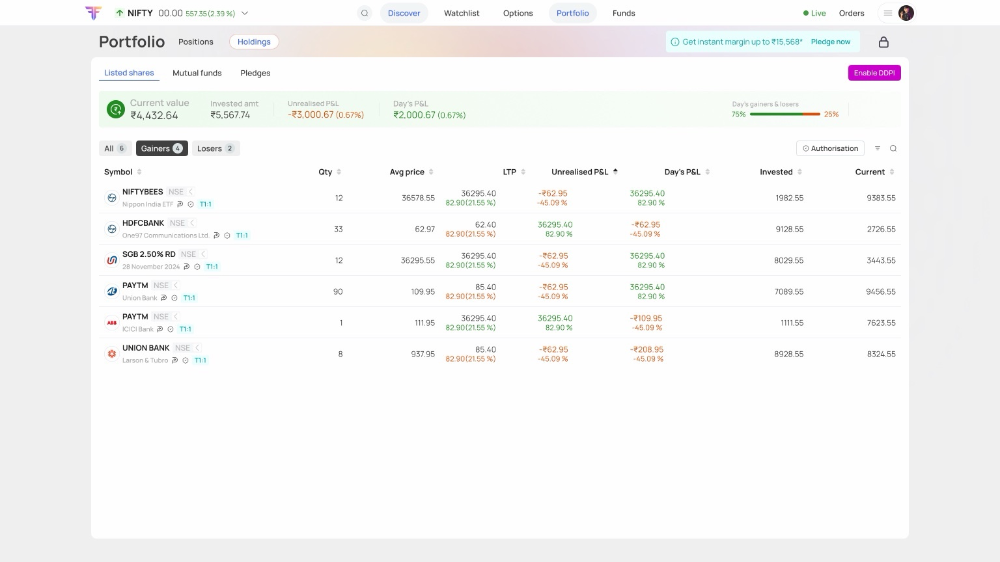
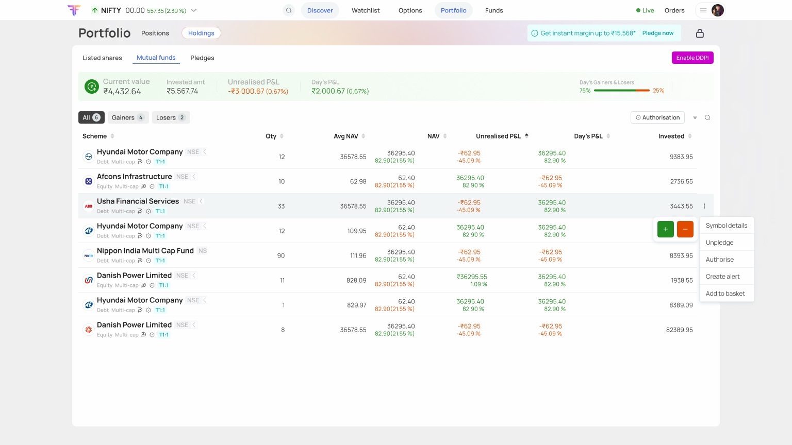
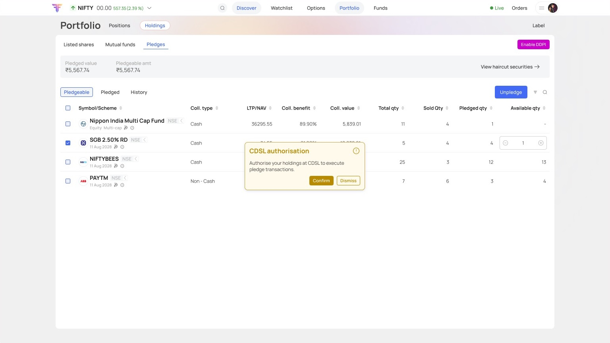
Listed shares: filters, Gainers & Losers, holding details, e-DIS.Mutual funds: filters, manage columns, MF details.Pledges: the pledge flow, what’s available to pledge, and history.
The most sensitive moment: leaving the app
e-DIS and pledging send the user to an external depository step (CDSL) and back. In that moment they’ve left the app they trust, so every step says where you are, what’s happening, and what comes next.
- 1. ChoosePick the holdings and how many to authorise.
- 2. ExplainBefore you leave, say what happens next.
- 3. CDSLThe external step, outside FYERS.
- 4. Back, confirmedA clear green note that it worked.
On web, the layout carried the structure. On mobile, the order of steps did.
By the time I reached mobile, the hard questions were answered: what was necessary, how traders group their assets, and which actions are time-sensitive. The challenge wasn’t what to show, but how to move through it on a small screen. The side panel couldn’t simply shrink, so mobile took a different path through the same structure.
| On web | On mobile |
|---|---|
| Filters in the side panel | Their own screen, with selectable chips |
| Group by in a menu | Selectable states on the list |
| Details and actions in the panel | Each gets its own screen |
| Exit all | A short, focused sequence ending in a clear confirmation |
Smart Exit became the longest mobile flow
about 11 screens
Mobile also has its own look: a soft gradient header that sets it apart from the white web layout.
A design system, built while designing.
FYERS didn’t have an official style guide for this product, so building one became part of the work. I helped the team create FDSG, the FYERS Design Style Guide, alongside the Positions and Holdings screens.
- Every screen was tested against shared components, not designed in isolation.
- We sat with stakeholders to check each screen against the system.
- Decisions about components, structure and variables were made while real screens depended on them. Shared pieces, like the empty-state illustration, kept web and mobile consistent.
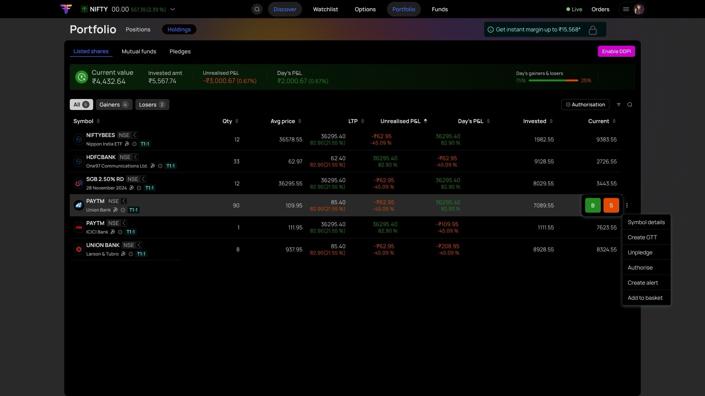
From wireframes to engineering.
- WireframesI defined the structure and the two-panel flows.
- UI partnershipWith a UI designer, Positions and Holdings came into FDSG.
- Team reviewTeammates helped refine the edge cases.
- Stakeholders and engineeringA few rounds of feedback, then accepted for engineering to build.
What the work made possible.
- Acceptedand taken up by engineering
- Filter, group, customiseeverything the legacy screen lacked
- A base for what came nextthe side panel and FDSG components carried into later screens
Two things I carry forward.
- Restraint is a feature. My first instinct was to put everything in one place. The better answer was to give experts depth without taking away clarity.
- Design the system, not just the screen. I started this project designing screens and ended it designing components, patterns and variables that three devices could share. That foundation is what made my next project, light and dark themes, possible.
Two questions, one screen: what do I own, and what’s still open? Answered without a scroll, a click or a wait.